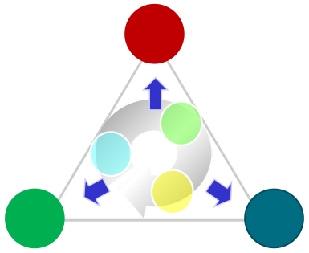

团队深耕通信行业多年，精通电信运营商技术，对电信行业发展现状有深刻理解。
团队历史项目资料
行业背景

背景及需求
原项目团队主营高性能计算与大数据服务
为电信运营商和互联网深度联合提供数据服务平台
解决行业发展痛点

伴随国企混改的浪潮，电信运营商与互联网行业进入深度合作阶段，诞生巨大的行业机会。
针对行业痛点，研发高性能数据服务平台，提供低时延、高性能、高可用的数据服务。
本章保留原稿的行业背景与团队项目定位，描述对应原项目时期。
团队历史项目资料
原项目团队主营高性能计算与大数据服务
为电信运营商和互联网深度联合提供数据服务平台
解决行业发展痛点
团队深耕通信行业多年，精通电信运营商技术，对电信行业发展现状有深刻理解。
伴随国企混改的浪潮，电信运营商与互联网行业进入深度合作阶段，诞生巨大的行业机会。
针对行业痛点，研发高性能数据服务平台，提供低时延、高性能、高可用的数据服务。
本章保留原稿的行业背景与团队项目定位，描述对应原项目时期。
团队历史项目资料

原稿历史年份及发送量口径；横条保留原稿的视觉层次，不按数值比例绘制。
原项目团队自主研发高性能短信网关，助力中国联通短信业务发展。
原稿记载：2019 年中国联通行业短信全部由该短信网关下发，截至原稿统计时发送量为 1397 亿。
原稿历史表述 统计范围待核实1 实现全联通行短一点接入
7 支持 3 大运营商、7 种短信协议
6 日均发送短信 6 亿条
10 日最高发送短信 10 亿条
8209 累积接入用户 8209 家
200 2019 年预计收益 200 亿
原稿预测 收益归属与口径待核实以上为原项目历史资料中的能力、规模和预测数据，待核实统计周期及依据，不代表申行科技当前业绩。
团队历史项目资料
随着移动互联网行业不断发展，用户鉴权验证（包括短信验证码等）的市场规模也随之扩大。
原稿将取号网关的产品特点概括为：用户体验好、安全性高、接入难度低、企业成本适中，并判断其将成为未来市场发展的主流技术。
原项目团队研发的取号网关采用第二代技术架构；“领先行业其他第一代产品”为原稿产品定位，比较依据待核实。
原稿产品定位
面向下一代用户鉴权系统的取号网关
原稿记载：中国联通采购原项目团队提供的取号网关后，开始向客户提供取号服务；当时已有近 6000 家 APP 使用该服务，每天使用量超 20 亿次，并已支持 5G 套餐用户，原稿表述为“用户全覆盖”。
原稿历史口径；用户数、调用量、覆盖范围及采购关系待核实，不代表当前在用规模或现有合作承诺。
团队历史项目资料


保留原稿四象限产品场景与产品图片。图片中的品牌、套餐、价格及界面属于历史展示，合作关系与对外披露范围待核实。
团队历史项目资料
防骚扰产品解决用户痛点


原稿历史产品展示；套餐价格、服务规则与界面数据保留原貌，不作为当前服务说明。
团队历史项目资料
原项目团队以平台建设及运营支撑的方式，为客户提供福利商城、砍价频道等多种技术和运营服务。
原稿记载：商城类技术服务为客户的用户维系、拉新促活和业绩提升提供助力。
原稿未标明上述效果的统计时间、样本、基线及归属。4% 的单位含义、ARPU 提升的统计周期和补贴范围仍待核实；此处保留历史资料，不作当前成效承诺。
核心产品 · 团队历史项目
 ETLModelOutputDataStore
ETLModelOutputDataStore每日处理数据超过千亿条，精准描绘用户画像
成果用于产品推荐、金融风控、业务安全、精准营销

本页保留原项目团队的历史业务描述与原稿标识。数据规模、统计周期、客户关系及标识对外使用权限待核实，不表示申行科技或 TokenHarbor 当前的客户关系与交付规模。
核心产品 · 团队历史项目
目标：伴随 5G 应用变革，基于大数据和人工智能技术赋能互联网企业，助力构建安全繁盛新时代。

开放原稿历史方案 保留原项目的目标、服务内容及三角业务关系；各项能力当时的建设与交付状态待核实，不作为申行科技或 TokenHarbor 当前已开放能力的说明。
团队历史项目 · 短信行业网关
 SP
SP
原稿历史案例 本页按原稿保留案例名称、节点与职责；项目归属、参与范围及对外披露权限待核实，不表示中国联通是申行科技或 TokenHarbor 当前客户。
核心技术 · 团队历史项目
 高可靠低成本高吞吐互联网
高可靠低成本高吞吐互联网本页保留原项目团队的 OES 技术与性能描述。测试环境、吞吐单位、业务负载及成本比较依据待核实；上述数据属于历史口径，不是 TokenHarbor 的性能指标或当前交付承诺。
团队历史项目 · 多媒体消息平台
Chatbot VoLTE 用户
VoLTE 用户 5G 用户
5G 用户 VoLTE 用户
VoLTE 用户 5G 用户
5G 用户原稿历史方案 本页保留原稿架构与功能说明；原稿对 BSF、A2P 及终端上传存储的表述、实际建设范围和对外披露权限待核实，不作为 TokenHarbor 的现有能力声明。